California Data Analysis
Data Import and Preprocessing
Annual Summary Report
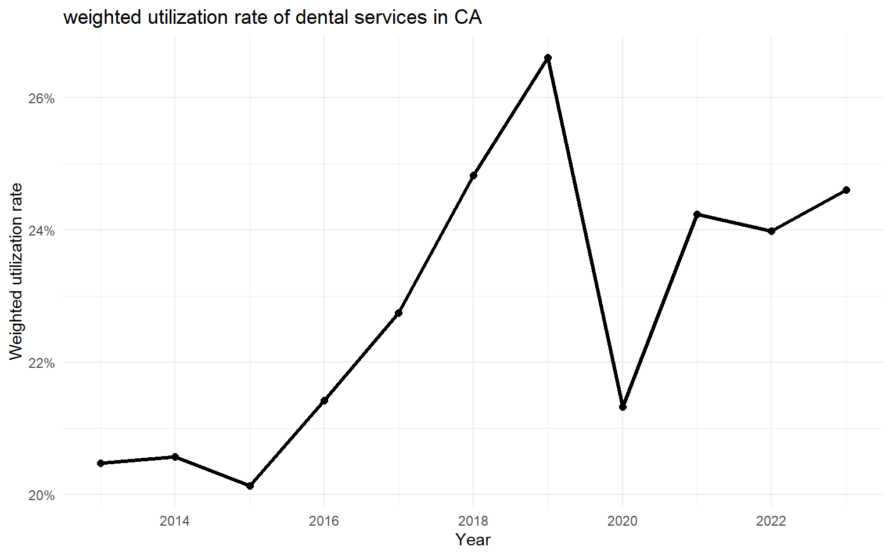
- This report analyzes the trends in dental service utilization in
California from CY 2013 to CY 2023.
- During this period, the annual weighted overall dental service
utilization reached its peak in CY 2019, at 26.6%.
- The lowest annual weighted utilization occurred in CY 2015, at
20.1%.
- The average annual weighted utilization rate over the entire period
was 22.8%, and the median value was 22.7%.
- The total number of enrolled individuals increased from 52,753,344
in CY 2013 to 111,088,145 in CY 2023, representing a growth of
110.6%.
Service Type Utilization Trends
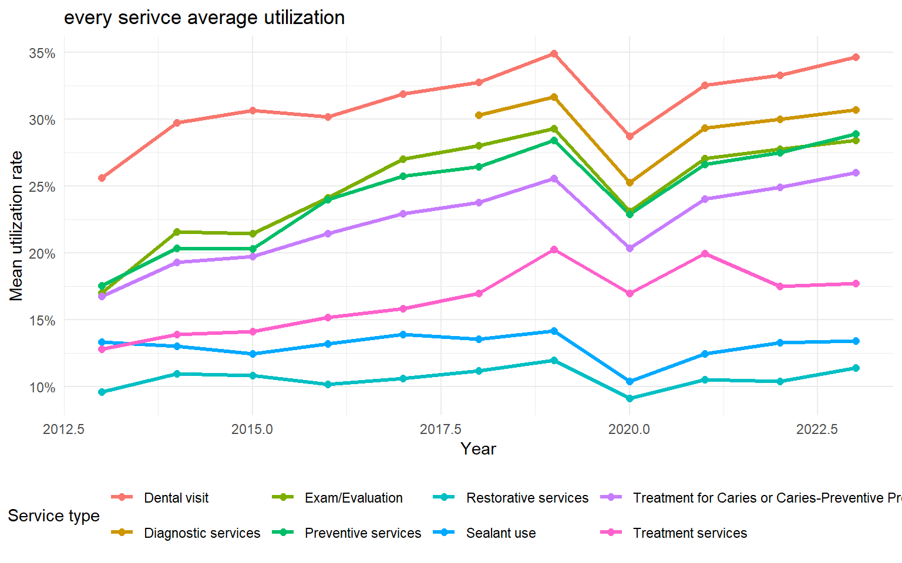
The figure below illustrates the mean utilization rate for each
service type from 2013 to 2023.
Among all categories, Dental visit has the highest
average utilization, increasing from about 25.6% in 2013 to around 34.9%
in 2023.
Preventive services and
Exam/Evaluation also show steady growth, reaching
around 28.9% and 29.3% by 2023.
In contrast, Restorative services and
Diagnostic services maintain lower utilization, both
staying near 10.6% on average.
A noticeable dip in 2020 reflects the disruption during the COVID-19
period, after which utilization levels gradually recovered.
Overall, from 2013 to 2023, most service types demonstrate a
consistent upward trend, highlighting an overall improvement in access
to dental care.
Age Group Mean Utilization Trends
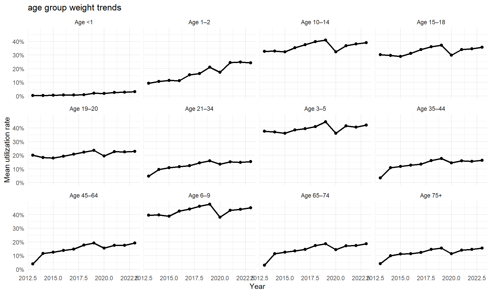
Linear Model Analysis
linear model results for year trend
| year |
0.0061 |
0.000137 |
model summary statistics
| 0.1873 |
0.1798 |
-882.5686 |
-834.815 |
According to the linear regression results, the coefficient for the
year variable is 0.0061 with a p-value of 0.000137,
indicating a statistically significant upward trend in dental
utilization over time after controlling for service type. On average,
the utilization rate increases by approximately 0.0061 (about 0.61
percentage points) each year, and this trend is highly significant
(p < 0.001).
The overall model fit statistics are as follows: R² = 0.1873,
adjusted R² = 0.1798, AIC = -882.57, and BIC = -834.82.
These values suggest that the model explains about 18% of the variance
in utilization rates, representing a moderate model fit, while the
relatively low AIC and BIC indicate a well-specified and parsimonious
model.
In summary, between 2013 and 2023, dental service utilization shows a
clear and statistically significant linear increase over time, implying
a steady improvement in overall access and use of dental care
services.
COVID-19 Interrupted Time Series (ITS)
We estimate the following model:
\[
\text{utilization}_{t}
= \beta_0
+ \beta_1 \cdot year_t
+ \beta_2 \cdot covid_t
+ \beta_3 \cdot (year_t \times covid_t)
\]
Where:
- β₁: pre-COVID slope
- β₂: immediate level drop in 2020
- β₃: slope change after COVID

Interpretation
## **Pre-COVID yearly slope:** 0.014
## **Immediate drop at COVID (level change):** 0.8248
## **Post-COVID slope change:** -4e-04
The interrupted time-series analysis shows a clear and statistically
significant upward trend in dental utilization prior to the COVID-19
pandemic (β₁ = 0.014, p < 0.001). In contrast, neither the estimated
level change in 2020 (β₂ = 0.825, p = 0.961) nor the change in
post-COVID slope (β₃ = −0.00043, p = 0.959) reached statistical
significance. These results indicate that, although descriptive plots
show an apparent decline during the onset of COVID-19, the regression
model does not detect a statistically reliable interruption in either
the level or trajectory of utilization. Overall, the data are most
consistent with a continuation of the pre-existing upward trend, with no
measurable long-term deviation attributable to the pandemic within this
aggregated CA system-level dataset.
Age-gap Inequality Trend Over Time
We compute utilization gap between highest vs lowest age-groups each
year. This checks whether age inequality is widening or narrowing.
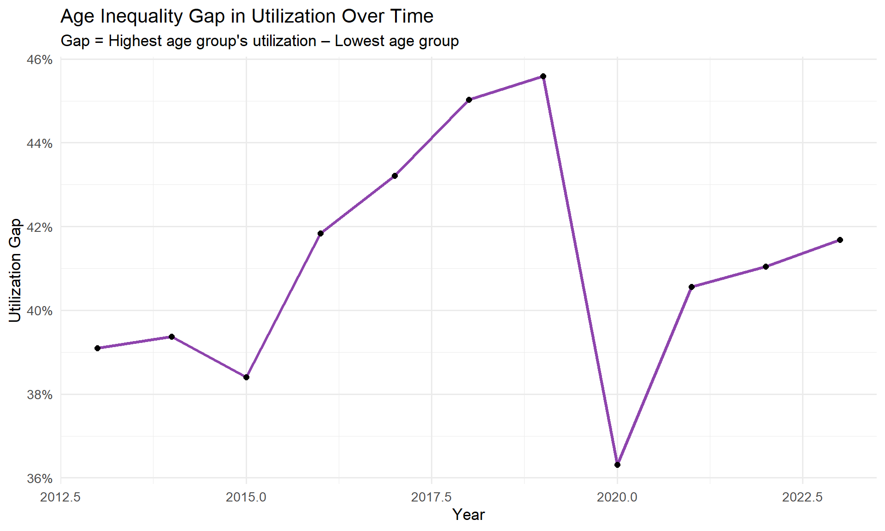
The age-based utilization gap in California shows a steady widening
throughout the pre-COVID period, rising from roughly 39% in 2013 to a
peak of nearly 46% by 2019. This pattern indicates that differences
between the highest-utilizing age group (school-aged children) and the
lowest-utilizing group (typically infants or older adults) became
increasingly pronounced during the years leading up to the pandemic. In
2020, the gap abruptly narrowed to approximately 36%, driven by a
disproportionately large decline among age groups that typically have
higher utilization. Following this disruption, the inequality gap began
to widen again, though it remained below its pre-pandemic peak. Overall,
the trend suggests that age-related disparities in dental service use
were increasing prior to COVID-19, temporarily compressed during the
pandemic, and have since partially re-expanded.
Service Composition Shift
We examine how the proportion of each service category changes over
time.
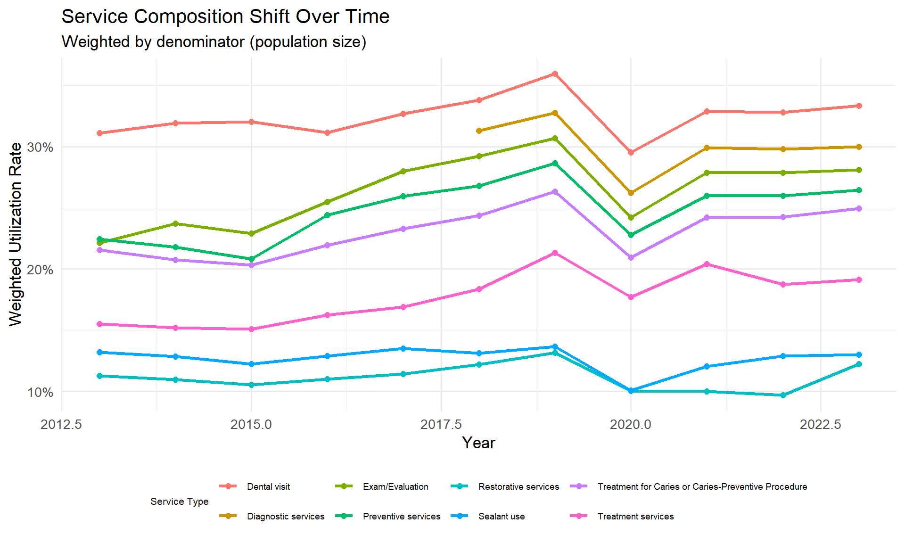
Across all service categories, weighted utilization rates in
California generally increased from 2013 to 2019, with the largest gains
observed in preventive services, diagnostic care, and
examinations—reflecting strengthening engagement in routine and
preventive dental care. In 2020, every service type experienced a
pronounced decline, consistent with widespread service disruptions
during the onset of COVID-19. Post-2020, most categories rebounded but
did not fully recover their pre-pandemic peak levels, and the relative
composition remained broadly similar: preventive and diagnostic services
continued to dominate, while restorative and sealant services maintained
lower but stable utilization levels. These patterns indicate that while
COVID-19 caused a sharp, system-wide contraction in service use, the
structural distribution of service types within Medi-Cal dental
utilization remained largely intact.
Age-specific Yearly Slope (Trend Strength)
Fit separate trend models for each age group.
Yearly Trend Slopes by Age Group
| Age 1–2 |
year |
0.0169246 |
0.0037840 |
4.4726828 |
0.0000312 |
| Age 45–64 |
year |
0.0109827 |
0.0022291 |
4.9270606 |
0.0000054 |
| Age 65–74 |
year |
0.0108350 |
0.0023474 |
4.6157550 |
0.0000173 |
| Age 35–44 |
year |
0.0091276 |
0.0018920 |
4.8243516 |
0.0000079 |
| Age 21–34 |
year |
0.0083963 |
0.0016226 |
5.1745750 |
0.0000021 |
| Age 75+ |
year |
0.0074849 |
0.0022369 |
3.3460904 |
0.0013291 |
| Age 10–14 |
year |
0.0056056 |
0.0057166 |
0.9805725 |
0.3297234 |
| Age 15–18 |
year |
0.0055382 |
0.0037860 |
1.4627947 |
0.1479992 |
| Age 3–5 |
year |
0.0047013 |
0.0050057 |
0.9391905 |
0.3508625 |
| Age 6–9 |
year |
0.0044637 |
0.0055038 |
0.8110119 |
0.4197355 |
| Age 19–20 |
year |
0.0043763 |
0.0024070 |
1.8182054 |
0.0733112 |
| Age <1 |
year |
0.0030743 |
0.0006139 |
5.0082057 |
0.0000045 |
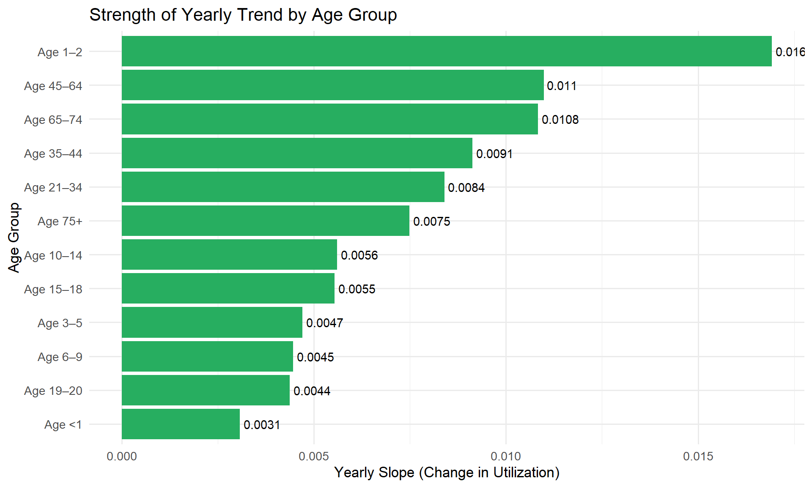
The yearly trend analysis reveals substantial heterogeneity in the
rate of increase in dental service utilization across age groups. The
steepest growth is observed among children aged 1–2, whose utilization
increased by approximately 0.0169 per year, indicating rapid gains in
service engagement for young toddlers. Middle-aged adults (45–64 and
65–74) also show relatively strong upward trends, with yearly increases
around 0.010–0.011, suggesting consistent improvement in utilization
among older working-age and early senior populations. In contrast,
school-aged children (3–14) and adolescents (15–18) exhibit much smaller
slope estimates (0.004–0.006), indicating slower growth despite being
the highest-utilizing groups overall. Infants (<1 year) display the
weakest trend (0.003), reflecting persistently low and only modestly
increasing service use. Taken together, these patterns indicate that
utilization has been rising across nearly all age groups, but the pace
of improvement is disproportionately concentrated among toddlers and
middle-aged adults, whereas school-aged children—already starting from
high baseline utilization—have experienced comparatively slower
incremental gains.
NHANES Data Analysis
Analytic Approach
Using NHANES oral health summary tables, we described age-, sex-, and
race-specific prevalence of total and untreated caries in primary and
permanent dentition. For each age group we plotted time trends
(1999–2017); for permanent teeth we also examined sex-specific and
race/ethnicity-specific trends and simple male–female and Black–White
gaps. To summarize long-term change, we fit weighted linear regressions
of prevalence on survey mid-year and reported slopes as percentage-point
change per 10 years. Because we used published summary estimates rather
than microdata, all analyses are descriptive.
Results Summary
In the most recent available survey mid-year (2017 for permanent
dentition and 2015 for some primary measures), caries showed a strong
age gradient: permanent-tooth caries was lowest in children 6–11 years,
higher in adolescents and young adults, and nearly universal in adults
40–69 years, while primary-tooth caries remained common in children 2–11
years. Within each age group, females had slightly higher
permanent-tooth caries prevalence than males, but sex differences were
small.
Over time, total caries stayed high in young children and older
adults, whereas untreated caries was consistently lower and tended to
decline, especially in children and younger adults. Regression slopes
confirmed modest decreases in untreated caries (on the order of a few
percentage points per decade) and little change in total caries among
older adults. Among youth aged 6–19 years, Mexican American and
Non-Hispanic Black groups had higher permanent-tooth caries than
Non-Hispanic Whites across most survey years; gaps narrowed slightly but
racial/ethnic disparities persisted.
Overall Interpretation
Overall, NHANES data suggest that dental caries is a lifelong,
cumulative condition: primary caries remains common in children,
permanent caries becomes almost universal in older adults, and declines
in untreated disease are modest and concentrated at younger ages. Sex
differences are small and relatively stable, while racial/ethnic gaps in
youth remain visible despite overall improvement. Age and dentition
stage, with superimposed racial/ethnic disparities, appear to be the
main axes of inequality in U.S. dental caries burden.
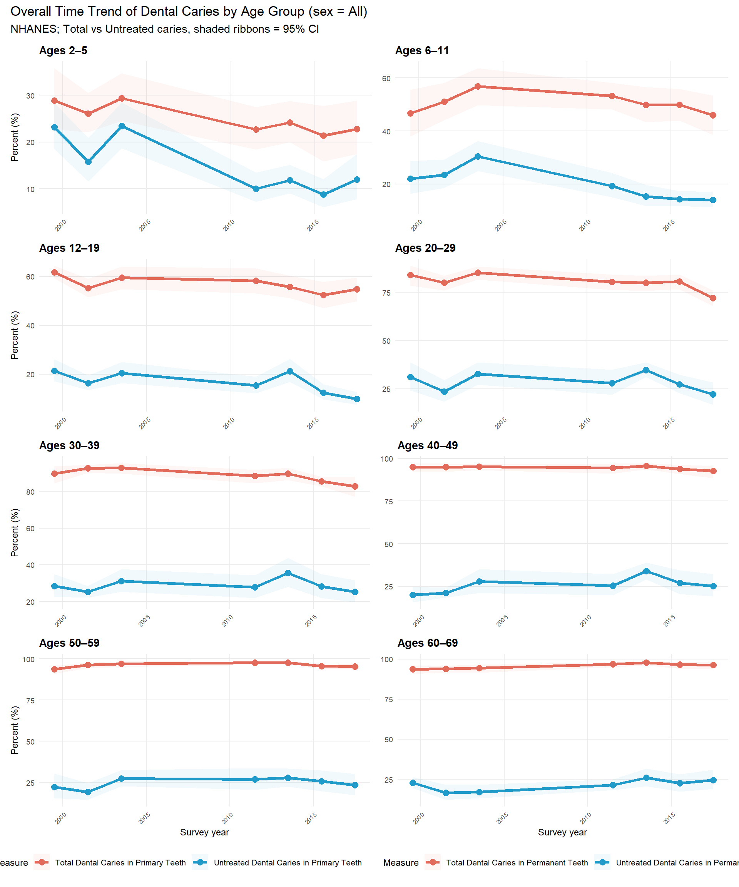
Long-term Regression (Slope)
Estimated linear time trends (slopes) in caries prevalence by
dentition, age group, and outcome. Slopes are interpreted as
percentage-point change per 10 years.
| Permanent |
6-11 |
Total caries |
-0.31 |
-3.05 |
-6.90 |
0.79 |
7 |
1999.5 |
2017.5 |
| Permanent |
12-19 |
Total caries |
-0.34 |
-3.41 |
-7.06 |
0.24 |
7 |
1999.5 |
2017.5 |
| Permanent |
20-29 |
Total caries |
-0.41 |
-4.09 |
-9.10 |
0.92 |
7 |
1999.5 |
2017.5 |
| Permanent |
30-39 |
Total caries |
-0.43 |
-4.28 |
-7.10 |
-1.46 |
7 |
1999.5 |
2017.5 |
| Permanent |
40-49 |
Total caries |
-0.04 |
-0.44 |
-1.69 |
0.80 |
7 |
1999.5 |
2017.5 |
| Permanent |
50-59 |
Total caries |
0.02 |
0.16 |
-1.81 |
2.12 |
7 |
1999.5 |
2017.5 |
| Permanent |
60-69 |
Total caries |
0.21 |
2.13 |
0.68 |
3.57 |
7 |
1999.5 |
2017.5 |
| Permanent |
6-11 |
Untreated caries |
-0.22 |
-2.22 |
-4.35 |
-0.09 |
7 |
1999.5 |
2017.5 |
| Permanent |
12-19 |
Untreated caries |
-0.45 |
-4.53 |
-9.03 |
-0.02 |
7 |
1999.5 |
2017.5 |
| Permanent |
20-29 |
Untreated caries |
-0.04 |
-0.38 |
-8.83 |
8.08 |
7 |
1999.5 |
2017.5 |
| Permanent |
30-39 |
Untreated caries |
0.10 |
1.05 |
-3.84 |
5.94 |
7 |
1999.5 |
2017.5 |
| Permanent |
40-49 |
Untreated caries |
0.54 |
5.38 |
0.20 |
10.55 |
7 |
1999.5 |
2017.5 |
| Permanent |
50-59 |
Untreated caries |
0.21 |
2.10 |
-2.88 |
7.08 |
7 |
1999.5 |
2017.5 |
| Permanent |
60-69 |
Untreated caries |
0.23 |
2.29 |
-2.32 |
6.90 |
7 |
1999.5 |
2017.5 |
| Primary |
2-5 |
Total caries |
-0.35 |
-3.53 |
-6.13 |
-0.93 |
7 |
1999.5 |
2017.5 |
| Primary |
6-11 |
Total caries |
-0.17 |
-1.69 |
-7.38 |
4.00 |
7 |
1999.5 |
2017.5 |
| Primary |
2-5 |
Untreated caries |
-0.73 |
-7.28 |
-12.44 |
-2.12 |
7 |
1999.5 |
2017.5 |
| Primary |
6-11 |
Untreated caries |
-0.70 |
-7.01 |
-11.39 |
-2.63 |
7 |
1999.5 |
2017.5 |
Caries prevalence by age and sex
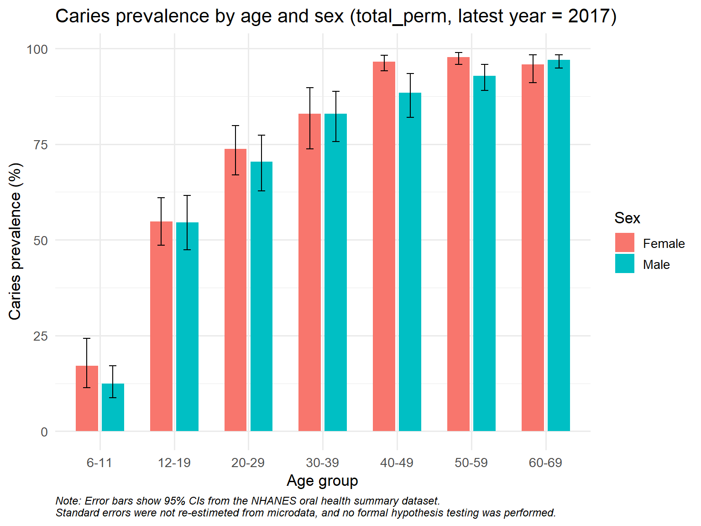
Race/Ethnicity Trends
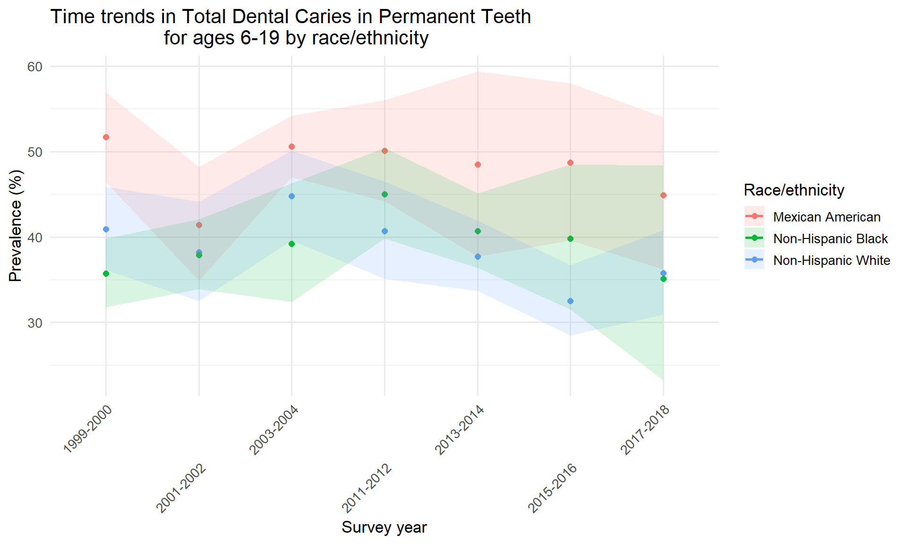
Combined data analysis
Sensitivity analysis
ca_data <- read_csv("../datasets/clean_ca.csv")
nhanes_data <- read_csv("../datasets/nhanes_oral_clean.csv")
ca_data <- ca_data %>%
mutate(
# Step 1: standardize age groups (replace en-dash with hyphen)
age_group_std = str_replace_all(age_group, "–", "-"),
# Step 2: baseline life-stage
age_group_baseline = case_when(
age_group_std %in% c("Age <1", "Age 1-2") ~ "Infant/Toddler",
age_group_std %in% c("Age 3-5") ~ "Early Childhood",
age_group_std %in% c("Age 6-9") ~ "Middle Childhood",
age_group_std %in% c("Age 10-14", "Age 15-18") ~ "Adolescent",
age_group_std %in% c("Age 19-20", "Age 21-34") ~ "Young Adult",
age_group_std %in% c("Age 35-44", "Age 45-64") ~ "Middle Adult",
age_group_std %in% c("Age 65-74", "Age 75+") ~ "Older Adult",
TRUE ~ NA_character_
),
# Step 3: alternative life-stage
age_group_alt = case_when(
age_group_std %in% c("Age <1", "Age 1-2") ~ "Infant/Toddler",
age_group_std %in% c("Age 3-5") ~ "Early Childhood",
age_group_std %in% c("Age 6-9", "Age 10-14") ~ "Middle Childhood",
age_group_std %in% c("Age 15-18") ~ "Adolescent",
age_group_std %in% c("Age 19-20", "Age 21-34") ~ "Young Adult",
age_group_std %in% c("Age 35-44", "Age 45-64") ~ "Middle Adult",
age_group_std %in% c("Age 65-74", "Age 75+") ~ "Older Adult",
TRUE ~ NA_character_
),
year_num = as.numeric(str_replace(year, "CY ", "")),
util_rate_num = parse_number(utilization_rate) / 100
)
Main trend plot for California data
ggplot(ca_data, aes(year_num, util_rate_num, color = age_group_baseline)) +
geom_line(size = 1) +
scale_y_continuous(labels = percent_format()) +
labs(
title = "CA Medicaid: Dental Utilization by Life-Stage",
x = "Year", y = "Utilization Rate"
) +
theme_bw()
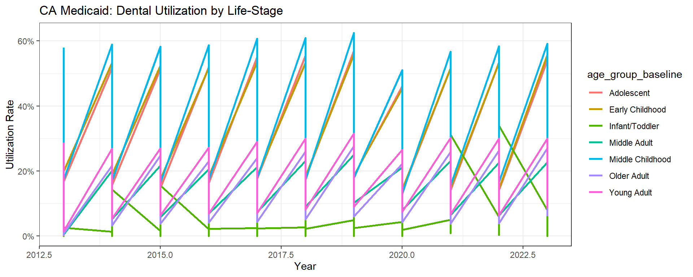
Sensitivity Analysis A: Baseline vs Alternative Grouping**
sens_data <- bind_rows(
ca_data %>% select(year_num, util_rate_num, age_group = age_group_baseline) %>% mutate(scenario = "Baseline"),
ca_data %>% select(year_num, util_rate_num, age_group = age_group_alt) %>% mutate(scenario = "Alternative")
)
ggplot(sens_data, aes(year_num, util_rate_num, color = scenario)) +
geom_line(size = 1) +
facet_wrap(~ age_group) +
scale_y_continuous(labels = percent_format()) +
labs(
title = "Sensitivity Analysis A: Baseline vs Alternative Grouping",
x = "Year", y = "Utilization Rate"
) +
theme_bw()
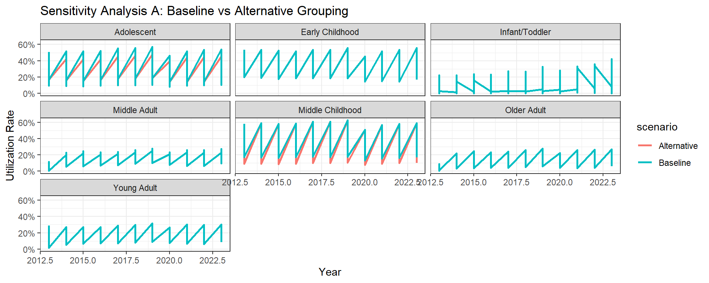
Sensitivity Summary Table
sens_summary_A <- sens_data %>%
group_by(age_group, scenario) %>%
summarise(mean_rate = mean(util_rate_num), .groups = "drop") %>%
pivot_wider(names_from = scenario, values_from = mean_rate) %>%
mutate(diff_A = Alternative - Baseline)
list(
Sensitivity_A = sens_summary_A
)
## $Sensitivity_A
## # A tibble: 7 × 4
## age_group Alternative Baseline diff_A
## <chr> <dbl> <dbl> <dbl>
## 1 Adolescent 0.329 0.347 -0.0176
## 2 Early Childhood 0.396 0.396 0
## 3 Infant/Toddler 0.0947 0.0947 0
## 4 Middle Adult 0.144 0.144 0
## 5 Middle Childhood 0.395 0.427 -0.0321
## 6 Older Adult 0.135 0.135 0
## 7 Young Adult 0.169 0.169 0
“Sensitivity analysis comparing the baseline and alternative
age-group definitions showed that five of the seven life-stage
categories produced identical utilization estimates. Only Adolescent and
Middle Childhood differed slightly (–1.8% and –3.2% respectively),
reflecting the intentional boundary shift of the 10–14 age segment.
These differences were small and did not change temporal trends or
overall conclusions; therefore, the baseline life-stage grouping was
retained for the main analysis.”
Combined analysis
library(tidyverse)
library(scales)
library(viridis)
ca <- read_csv("../datasets/clean_ca.csv")
nh <- read_csv("../datasets/nhanes_oral_clean.csv")
ca_clean <- ca %>%
mutate(
year = as.numeric(gsub("CY ", "", year)),
utilization_rate = as.numeric(gsub("%", "", utilization_rate)) / 100
) %>%
filter(age_group %in% c("Age 3–5", "Age 6–9", "Age 10–14", "Age 15–18")) %>%
group_by(year) %>%
summarise(
preventive = mean(utilization_rate[measure == "Preventive services"], na.rm = TRUE)
)
nh_clean <- nh %>%
filter(
sex == "All",
race_ethnicity == "All",
measure_clean == "Untreated caries",
age_group %in% c("2-5", "6-11", "12-19")
) %>%
group_by(survey_years) %>%
summarise(
untreated = mean(percent/100, na.rm = TRUE)
) %>%
separate(survey_years, into = c("y1","y2"), sep="-", remove=FALSE) %>%
mutate(year = as.numeric(y1)) %>%
select(year, untreated)
CA vs NHANES overlay
## --------------------------------------------------
## CA vs NHANES overlay (no join, two datasets)
## --------------------------------------------------
library(tidyverse)
library(scales)
library(janitor)
ca_raw <- read_csv("../datasets/clean_ca.csv")
ca_child <- ca_raw %>%
mutate(
year = as.numeric(gsub("CY\\s*", "", year)),
utilization_rate = as.numeric(gsub("%", "", utilization_rate)) / 100
) %>%
filter(
measure == "Preventive services",
age_group %in% c("Age 6–9", "Age 6-9")
) %>%
group_by(year) %>%
summarise(
util = sum(users, na.rm = TRUE) / sum(denominator, na.rm = TRUE),
.groups = "drop"
) %>%
mutate(
z = as.numeric(scale(util)),
series = "CA preventive (z)"
)
nh_raw <- read_csv("../datasets/nhanes_oral_clean.csv") %>%
clean_names()
nh_child <- nh_raw %>%
mutate(age_group = gsub("–|—", "-", age_group)) %>%
filter(
tolower(sex) == "all",
age_group == "6-11",
measure_clean == "untreated_primary"
) %>%
transmute(
year = year_mid,
util = percent / 100
) %>%
arrange(year) %>%
mutate(
z = as.numeric(scale(util)),
series = "NHANES untreated (z)"
)
overlay_df <- bind_rows(ca_child, nh_child)
ggplot(overlay_df, aes(x = year, y = z, color = series)) +
geom_line(linewidth = 1.2) +
geom_point(size = 2) +
scale_color_manual(
values = c(
"CA preventive (z)" = "#1f77b4",
"NHANES untreated (z)" = "#d62728"
)
) +
labs(
title = "Standardized Trend Comparison (z-score overlay)",
subtitle = "CA preventive utilization vs NHANES untreated caries (children)",
x = "Year",
y = "Standardized value (z-score)",
color = ""
) +
theme_minimal(base_size = 13) +
theme(
legend.position = "bottom",
plot.title = element_text(face = "bold")
)
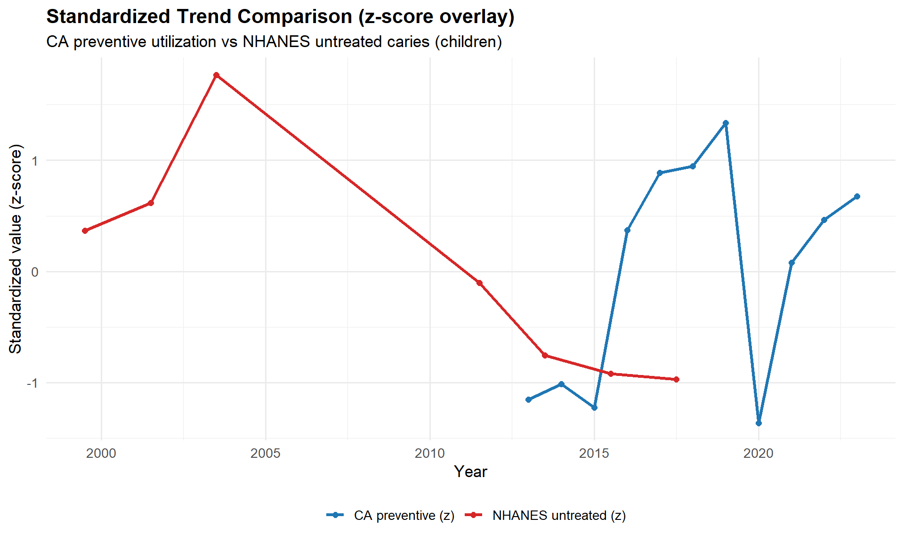
Although the two datasets cover different years, the standardized
trends allow a visual comparison of their patterns. NHANES untreated
caries among children rises in the early 2000s and steadily declines
after 2005, indicating improving national oral health. California’s
preventive utilization (2013–2023) shows a similar upward trend before a
sharp COVID-19 drop in 2020 and a rapid rebound afterward. While not
temporally aligned, both trajectories suggest improving preventive
behaviors or outcomes over time, with the CA pattern additionally
highlighting the strong impact of the pandemic on service use.
Heatmap
library(dplyr)
library(stringr)
library(ggplot2)
library(readr)
library(patchwork)
# ===============================
# Load data
# ===============================
ca <- read.csv("../datasets/clean_ca.csv")
nh <- read.csv("../datasets/nhanes_oral_clean.csv")
# ===============================
# Process CA dataset
# ===============================
ca_clean <- ca %>%
mutate(
age_group_std = str_replace_all(age_group, "–", "-"),
# ---- Life-stage mapping (CA) ----
age_group_baseline = case_when(
age_group_std %in% c("Age <1", "Age 1-2") ~ "Infant/Toddler",
age_group_std %in% c("Age 3-5") ~ "Early Childhood",
age_group_std %in% c("Age 6-9") ~ "Middle Childhood",
age_group_std %in% c("Age 10-14", "Age 15-18") ~ "Adolescent",
age_group_std %in% c("Age 19-20", "Age 21-34") ~ "Young Adult",
age_group_std %in% c("Age 35-44", "Age 45-64") ~ "Middle Adult",
age_group_std %in% c("Age 65-74", "Age 75+") ~ "Older Adult",
TRUE ~ NA_character_
),
year_num = as.numeric(str_replace(year, "CY ", "")),
util_rate_num = parse_number(utilization_rate) / 100
)
# ===============================
# CA heatmap input: year × life-stage × utilization_rate
# ===============================
ca_heatmap <- ca_clean %>%
group_by(year_num, age_group_baseline) %>%
summarise(
util_rate = mean(util_rate_num, na.rm = TRUE),
.groups = "drop"
)
# ===============================
# Process NHANES dataset
# ===============================
nh_clean <- nh %>%
filter(sex == "All", race_ethnicity == "All") %>%
mutate(
age_group_std = str_replace_all(age_group, "–", "-"),
# ---- NHANES → CA life-stage mapping ----
age_group_baseline = case_when(
age_group_std == "2-5" ~ "Early Childhood",
age_group_std == "6-11" ~ "Middle Childhood",
age_group_std == "12-19" ~ "Adolescent",
age_group_std %in% c("20-29", "30-39") ~ "Young Adult",
age_group_std %in% c("40-49", "50-59") ~ "Middle Adult",
age_group_std %in% c("60-69", "70 and over") ~ "Older Adult",
TRUE ~ NA_character_
),
prev_num = percent / 100 # prevalence
)
# ===============================
# NHANES heatmap input: period × life-stage × prevalence
# ===============================
nh_heatmap <- nh_clean %>%
group_by(survey_years, age_group_baseline) %>%
summarise(
prevalence = mean(prev_num, na.rm = TRUE),
.groups = "drop"
)
p1 <- ggplot(ca_heatmap, aes(x = year_num, y = age_group_baseline, fill = util_rate)) +
geom_tile(color = "white") +
scale_fill_viridis_c(option = "C", labels=scales::percent_format()) +
labs(
title = "CA Preventive Service Utilization (Heatmap)",
x = "Year",
y = "Life Stage",
fill = "Utilization"
) +
theme_minimal(base_size = 14)
p2 <- ggplot(nh_heatmap, aes(x = survey_years, y = age_group_baseline, fill = prevalence)) +
geom_tile(color = "white") +
scale_fill_viridis_c(option = "C", labels=scales::percent_format()) +
labs(
title = "NHANES Untreated Caries (Heatmap)",
x = "Survey Cycle",
y = "Life Stage",
fill = "Prevalence"
) +
theme_minimal(base_size = 14) +
theme(axis.text.x = element_text(angle = 45, hjust = 1))
p1 + p2
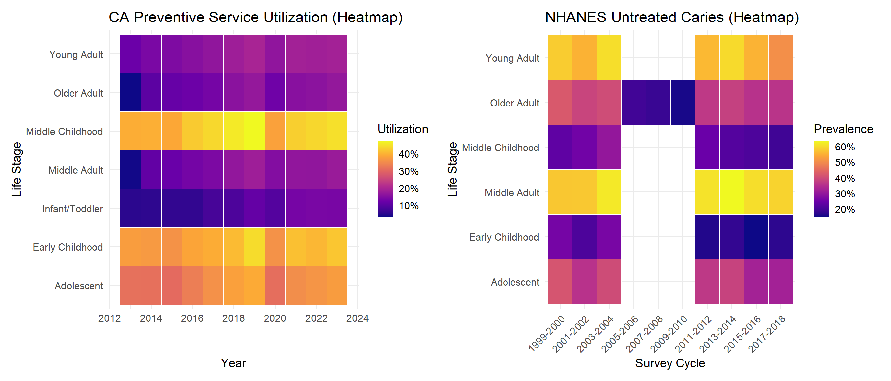
Across life-stages, California’s preventive utilization trends
broadly align with NHANES untreated caries risk patterns: higher caries
burden groups generally correspond to higher preventive utilization.